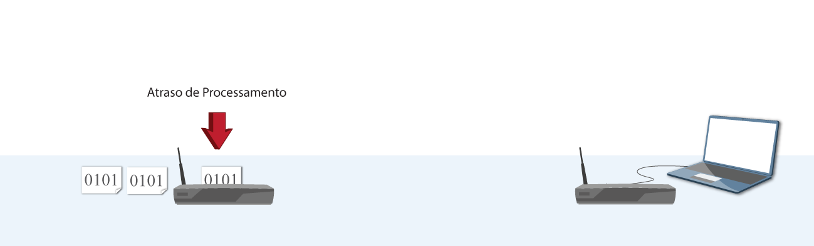
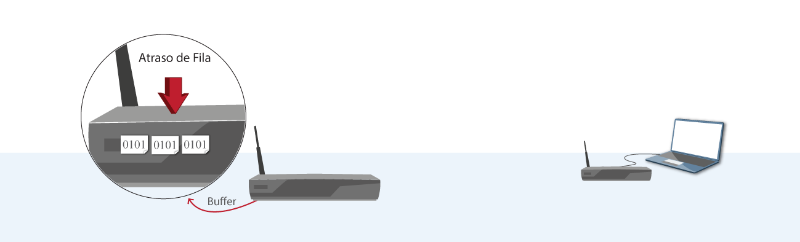

Tipos de Atraso
Em uma situação ideal, gostaríamos que os serviços da Internet enviassem nossos dados sem atrasos nem perdas.
Porém, isso não é possível devido ao uso do modelo de Comutação de Pacotes utilizado pelo protocolo IP.
Ao solicitarmos ou enviarmos uma informação, dividimos esses dados em pacotes que iniciarão em um sistema final
(dispositivos que executam aplicações e estão nas bordas da rede), passarão por vários roteadores e chegarão em
outro sistema final. No meio desse processo, existem vários atrasos. São esses: atraso de fila, processamento,
transmissão e propagação.
Para entendermos redes de computadores em geral, precisamos entender esses atrasos e como eles afetam o envio
dos pacotes.
Atraso de processamento
Tempo necessário para examinar o cabeçalho do pacote, determinar se existe algum erro, decidir para onde o mesmo deve ser encaminhado, entre outros fatores.
Atraso de Fila
Esse atraso acontece quando o pacote precisa esperar para ser transmitido. O tempo desse atraso depende do número de pacotes que chegaram antes e estão nessa fila esperando a transmissão. É o atraso mais importante e mais impactante no processo. Porém, seu cálculo é bastante complexo devido à sua característica estatística.
Atraso de Transmissão
É o tempo necessário para transmitir todos os bits do pacote para o enlace, ou seja, o tempo necessário para o pacote passar completamente pelo roteador.
Atraso de Propagação
Caracteriza-se pelo tempo para propagar os bits do pacote do roteador A ao B. O bit se propaga à velocidade de propagação do enlace, que depende do meio físico.

Atraso de transmissão X Atraso de propagação
Comumente, ao iniciar o estudo de redes tem-se uma dificuldade para entender a diferença entre o atraso de
transmissão e de propagação.
Para ajudar, vamos ver uma analogia:
Pense em uma encomenda que você está esperando ansiosamente para chegar na sua casa. Ela precisará sair da
sede dos correios mais perto de sua casa, ser colocada em um meio de transporte (um caminhão, por exemplo)
e ser levada até sua casa.
O tempo em que seu pacote é colocado no caminhão pode ser comparado ao atraso de transmissão, que é o tempo
que o roteador está “empurrando” seu pacote para o meio físico de envio.
Já o tempo que o caminhão leva da sede dos correios até sua casa seria o atraso de propagação, que é o tempo
que o pacote leva para trafegar de um roteador para outro.
Para saber mais, consulte o capítulo 1 do livro do Kurose: Redes de Computadores e a Internet.